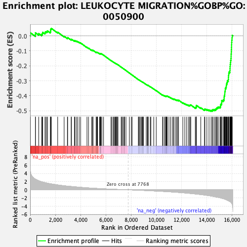
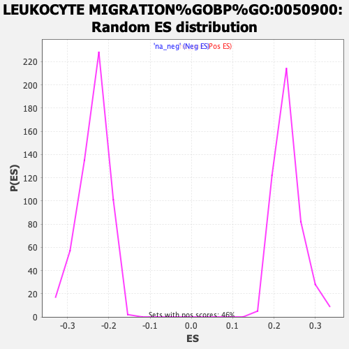

| | | Dataset | rankings |
| Phenotype | NoPhenotypeAvailable |
| Upregulated in class | na_neg |
| GeneSet | LEUKOCYTE MIGRATION%GOBP%GO:0050900 |
| Enrichment Score (ES) | -0.50431275 |
| Normalized Enrichment Score (NES) | -2.133191 |
| Nominal p-value | 0.0 |
| FDR q-value | 0.0013568812 |
| FWER p-Value | 0.026 |
Table: GSEA Results Summary

Fig 1: Enrichment plot: LEUKOCYTE MIGRATION%GOBP%GO:0050900
Profile of the Running ES Score & Positions of GeneSet Members on the Rank Ordered List
| PROBE | GENE SYMBOL | GENE_TITLE | RANK IN GENE LIST | RANK METRIC SCORE | RUNNING ES | CORE ENRICHMENT | | 1 | CCL21 | | | 21 | 4.560 | 0.0209 | No |
| 2 | CD34 | | | 418 | 2.588 | 0.0086 | No |
| 3 | CAV1 | | | 420 | 2.585 | 0.0211 | No |
| 4 | BSG | | | 681 | 2.218 | 0.0156 | No |
| 5 | SDC3 | | | 917 | 1.964 | 0.0104 | No |
| 6 | MIF | | | 972 | 1.919 | 0.0164 | No |
| 7 | SLC16A1 | | | 998 | 1.896 | 0.0240 | No |
| 8 | FOLR2 | | | 1179 | 1.755 | 0.0213 | No |
| 9 | ITGAV | | | 1210 | 1.729 | 0.0278 | No |
| 10 | EDNRB | | | 1311 | 1.666 | 0.0296 | No |
| 11 | GOLPH3 | | | 1382 | 1.610 | 0.0331 | No |
| 12 | IGHA1 | | | 1602 | 1.490 | 0.0266 | No |
| 13 | SDC2 | | | 1627 | 1.472 | 0.0322 | No |
| 14 | ITGB1 | | | 1628 | 1.472 | 0.0394 | No |
| 15 | SLC7A7 | | | 1639 | 1.466 | 0.0459 | No |
| 16 | JAM2 | | | 1683 | 1.443 | 0.0503 | No |
| 17 | GRB2 | | | 2183 | 1.200 | 0.0247 | No |
| 18 | COL1A1 | | | 2695 | 0.997 | -0.0026 | No |
| 19 | COL1A2 | | | 2951 | 0.910 | -0.0142 | No |
| 20 | KIT | | | 2975 | 0.903 | -0.0112 | No |
| 21 | XG | | | 3251 | 0.823 | -0.0245 | No |
| 22 | ESAM | | | 3279 | 0.812 | -0.0222 | No |
| 23 | PROS1 | | | 3505 | 0.745 | -0.0327 | No |
| 24 | MSN | | | 3532 | 0.738 | -0.0308 | No |
| 25 | AIMP1 | | | 3642 | 0.710 | -0.0342 | No |
| 26 | PTPRO | | | 3740 | 0.680 | -0.0370 | No |
| 27 | TNFRSF11A | | | 3884 | 0.642 | -0.0428 | No |
| 28 | ATP1B1 | | | 4002 | 0.612 | -0.0472 | No |
| 29 | CYP7B1 | | | 4505 | 0.490 | -0.0764 | No |
| 30 | SBDS | | | 4629 | 0.463 | -0.0819 | No |
| 31 | GAS6 | | | 4873 | 0.415 | -0.0951 | No |
| 32 | MERTK | | | 4949 | 0.402 | -0.0979 | No |
| 33 | PIP5K1C | | | 4963 | 0.400 | -0.0968 | No |
| 34 | ANXA1 | | | 4979 | 0.395 | -0.0958 | No |
| 35 | HMGB1 | | | 5231 | 0.350 | -0.1098 | No |
| 36 | EDN1 | | | 5246 | 0.348 | -0.1090 | No |
| 37 | RET | | | 5303 | 0.338 | -0.1109 | No |
| 38 | EPS8 | | | 5331 | 0.333 | -0.1110 | No |
| 39 | LGALS3 | | | 5344 | 0.331 | -0.1101 | No |
| 40 | PTPN11 | | | 5501 | 0.303 | -0.1185 | No |
| 41 | SLC7A8 | | | 5554 | 0.293 | -0.1203 | No |
| 42 | TEK | | | 5575 | 0.290 | -0.1201 | No |
| 43 | GYPC | | | 5578 | 0.289 | -0.1189 | No |
| 44 | GCNT1 | | | 5587 | 0.286 | -0.1180 | No |
| 45 | JAM3 | | | 5614 | 0.281 | -0.1182 | No |
| 46 | HSD3B7 | | | 5689 | 0.268 | -0.1216 | No |
| 47 | S1PR1 | | | 5820 | 0.249 | -0.1285 | No |
| 48 | GPC1 | | | 6409 | 0.157 | -0.1648 | No |
| 49 | ADD2 | | | 6470 | 0.149 | -0.1678 | No |
| 50 | FN1 | | | 6577 | 0.135 | -0.1738 | No |
| 51 | MDK | | | 6640 | 0.126 | -0.1771 | No |
| 52 | CD47 | | | 6708 | 0.118 | -0.1807 | No |
| 53 | TGFB2 | | | 6758 | 0.113 | -0.1833 | No |
| 54 | FLT1 | | | 6781 | 0.110 | -0.1841 | No |
| 55 | PPIA | | | 6851 | 0.102 | -0.1880 | No |
| 56 | WNK1 | | | 6865 | 0.100 | -0.1883 | No |
| 57 | YES1 | | | 6875 | 0.099 | -0.1884 | No |
| 58 | F11R | | | 6934 | 0.092 | -0.1916 | No |
| 59 | ANGPT1 | | | 6963 | 0.089 | -0.1929 | No |
| 60 | FER | | | 7213 | 0.057 | -0.2083 | No |
| 61 | CD58 | | | 7281 | 0.048 | -0.2123 | No |
| 62 | FYN | | | 7311 | 0.045 | -0.2139 | No |
| 63 | SHC1 | | | 7411 | 0.036 | -0.2199 | No |
| 64 | SLC16A3 | | | 7473 | 0.029 | -0.2236 | No |
| 65 | RPS19 | | | 7477 | 0.029 | -0.2237 | No |
| 66 | L1CAM | | | 7596 | 0.017 | -0.2310 | No |
| 67 | PTN | | | 7867 | -0.009 | -0.2479 | No |
| 68 | MYH9 | | | 8025 | -0.026 | -0.2577 | No |
| 69 | SOS1 | | | 8079 | -0.032 | -0.2609 | No |
| 70 | ROCK1 | | | 8576 | -0.096 | -0.2916 | No |
| 71 | TNFRSF10A | | | 8626 | -0.102 | -0.2942 | No |
| 72 | ITGA6 | | | 8630 | -0.103 | -0.2939 | No |
| 73 | CEACAM1 | | | 8703 | -0.112 | -0.2978 | No |
| 74 | SIRPA | | | 8788 | -0.123 | -0.3025 | No |
| 75 | ANGPT2 | | | 8850 | -0.131 | -0.3057 | No |
| 76 | GRB14 | | | 8909 | -0.139 | -0.3087 | No |
| 77 | GATA3 | | | 8937 | -0.143 | -0.3097 | No |
| 78 | SLC3A2 | | | 8979 | -0.147 | -0.3116 | No |
| 79 | CD99 | | | 9203 | -0.178 | -0.3247 | No |
| 80 | PDGFB | | | 9288 | -0.188 | -0.3291 | No |
| 81 | SELP | | | 9319 | -0.193 | -0.3300 | No |
| 82 | EDN3 | | | 9323 | -0.194 | -0.3293 | No |
| 83 | SDC4 | | | 9361 | -0.199 | -0.3306 | No |
| 84 | PIK3R1 | | | 9517 | -0.225 | -0.3393 | No |
| 85 | CD84 | | | 9571 | -0.233 | -0.3415 | No |
| 86 | CKLF | | | 9798 | -0.271 | -0.3544 | No |
| 87 | ATP1B2 | | | 9995 | -0.302 | -0.3652 | No |
| 88 | APOB | | | 10496 | -0.387 | -0.3948 | No |
| 89 | CD74 | | | 10512 | -0.389 | -0.3938 | No |
| 90 | IRAK4 | | | 10618 | -0.407 | -0.3984 | No |
| 91 | ITGA3 | | | 10705 | -0.424 | -0.4018 | No |
| 92 | IL16 | | | 10720 | -0.426 | -0.4006 | No |
| 93 | SRC | | | 10783 | -0.438 | -0.4024 | No |
| 94 | SLC12A2 | | | 10807 | -0.441 | -0.4017 | No |
| 95 | ITGA5 | | | 10828 | -0.445 | -0.4007 | No |
| 96 | FCER1G | | | 10866 | -0.453 | -0.4009 | No |
| 97 | P2RX4 | | | 11002 | -0.481 | -0.4070 | No |
| 98 | ATP1B3 | | | 11134 | -0.508 | -0.4128 | No |
| 99 | PPIL2 | | | 11273 | -0.535 | -0.4188 | No |
| 100 | CX3CL1 | | | 11364 | -0.556 | -0.4218 | No |
| 101 | IL6R | | | 11387 | -0.561 | -0.4204 | No |
| 102 | PIK3CA | | | 11508 | -0.586 | -0.4251 | No |
| 103 | SLC7A5 | | | 11618 | -0.610 | -0.4290 | No |
| 104 | CD44 | | | 11667 | -0.621 | -0.4290 | No |
| 105 | GBF1 | | | 11755 | -0.641 | -0.4314 | No |
| 106 | PLCG1 | | | 11765 | -0.643 | -0.4288 | No |
| 107 | PODXL2 | | | 12101 | -0.717 | -0.4464 | No |
| 108 | NCKAP1L | | | 12259 | -0.766 | -0.4525 | No |
| 109 | DOK2 | | | 12405 | -0.811 | -0.4577 | No |
| 110 | CXCL16 | | | 12542 | -0.848 | -0.4621 | No |
| 111 | SYK | | | 12646 | -0.876 | -0.4643 | No |
| 112 | SLC7A11 | | | 12674 | -0.885 | -0.4617 | No |
| 113 | TNFRSF10D | | | 12734 | -0.902 | -0.4610 | No |
| 114 | LYST | | | 13088 | -1.013 | -0.4783 | No |
| 115 | VCAM1 | | | 13158 | -1.040 | -0.4775 | No |
| 116 | TGFB1 | | | 13166 | -1.042 | -0.4729 | No |
| 117 | PIK3CG | | | 13175 | -1.045 | -0.4683 | No |
| 118 | ITGAM | | | 13181 | -1.049 | -0.4635 | No |
| 119 | CCR2 | | | 13527 | -1.158 | -0.4796 | No |
| 120 | GPR183 | | | 13815 | -1.275 | -0.4914 | No |
| 121 | CCR1 | | | 13855 | -1.289 | -0.4876 | No |
| 122 | PDE4B | | | 14009 | -1.360 | -0.4906 | No |
| 123 | CH25H | | | 14178 | -1.436 | -0.4941 | No |
| 124 | ITGB3 | | | 14341 | -1.520 | -0.4969 | Yes |
| 125 | CX3CR1 | | | 14438 | -1.578 | -0.4952 | Yes |
| 126 | GLG1 | | | 14502 | -1.615 | -0.4913 | Yes |
| 127 | SELPLG | | | 14627 | -1.678 | -0.4910 | Yes |
| 128 | TRPM4 | | | 14715 | -1.741 | -0.4879 | Yes |
| 129 | SAA1 | | | 14771 | -1.773 | -0.4828 | Yes |
| 130 | LCK | | | 14833 | -1.802 | -0.4778 | Yes |
| 131 | ITGA4 | | | 14914 | -1.848 | -0.4738 | Yes |
| 132 | CCL8 | | | 15050 | -1.940 | -0.4729 | Yes |
| 133 | CD2 | | | 15097 | -1.985 | -0.4661 | Yes |
| 134 | TNFRSF10B | | | 15102 | -1.987 | -0.4567 | Yes |
| 135 | SPN | | | 15169 | -2.036 | -0.4509 | Yes |
| 136 | INPP5D | | | 15184 | -2.049 | -0.4418 | Yes |
| 137 | ICAM1 | | | 15187 | -2.050 | -0.4319 | Yes |
| 138 | CXCR4 | | | 15304 | -2.159 | -0.4287 | Yes |
| 139 | TRPM2 | | | 15370 | -2.215 | -0.4220 | Yes |
| 140 | ITGB7 | | | 15376 | -2.225 | -0.4115 | Yes |
| 141 | ALOX5 | | | 15382 | -2.232 | -0.4009 | Yes |
| 142 | LYN | | | 15420 | -2.273 | -0.3921 | Yes |
| 143 | ITGAL | | | 15427 | -2.282 | -0.3814 | Yes |
| 144 | CXCL9 | | | 15433 | -2.286 | -0.3706 | Yes |
| 145 | CEACAM3 | | | 15464 | -2.328 | -0.3611 | Yes |
| 146 | PTPN6 | | | 15468 | -2.333 | -0.3499 | Yes |
| 147 | CXCL10 | | | 15526 | -2.415 | -0.3417 | Yes |
| 148 | CD48 | | | 15548 | -2.445 | -0.3311 | Yes |
| 149 | CCL2 | | | 15565 | -2.463 | -0.3201 | Yes |
| 150 | HCK | | | 15610 | -2.523 | -0.3106 | Yes |
| 151 | CXCR2 | | | 15634 | -2.556 | -0.2996 | Yes |
| 152 | FFAR2 | | | 15704 | -2.659 | -0.2910 | Yes |
| 153 | CCL5 | | | 15715 | -2.678 | -0.2786 | Yes |
| 154 | ITGB2 | | | 15719 | -2.684 | -0.2657 | Yes |
| 155 | SLC7A6 | | | 15740 | -2.709 | -0.2537 | Yes |
| 156 | PF4 | | | 15756 | -2.738 | -0.2413 | Yes |
| 157 | PIK3CB | | | 15830 | -2.861 | -0.2320 | Yes |
| 158 | MYO1G | | | 15843 | -2.884 | -0.2187 | Yes |
| 159 | PIK3CD | | | 15849 | -2.892 | -0.2049 | Yes |
| 160 | THBD | | | 15857 | -2.917 | -0.1911 | Yes |
| 161 | TREM1 | | | 15879 | -2.950 | -0.1780 | Yes |
| 162 | SELL | | | 15892 | -3.017 | -0.1641 | Yes |
| 163 | CXCL2 | | | 15918 | -3.084 | -0.1506 | Yes |
| 164 | CXCR1 | | | 15927 | -3.116 | -0.1359 | Yes |
| 165 | ZAP70 | | | 15929 | -3.128 | -0.1208 | Yes |
| 166 | AMICA1 | | | 15945 | -3.178 | -0.1062 | Yes |
| 167 | S100A8 | | | 15950 | -3.197 | -0.0909 | Yes |
| 168 | SELE | | | 15961 | -3.261 | -0.0756 | Yes |
| 169 | PPBP | | | 15967 | -3.281 | -0.0599 | Yes |
| 170 | ITGAX | | | 15973 | -3.307 | -0.0441 | Yes |
| 171 | ADAM8 | | | 15982 | -3.348 | -0.0283 | Yes |
| 172 | IL6 | | | 16002 | -3.423 | -0.0128 | Yes |
| 173 | S100A9 | | | 16017 | -3.524 | 0.0035 | Yes |
Table: GSEA details [plain text format]

Fig 2: LEUKOCYTE MIGRATION%GOBP%GO:0050900: Random ES distribution
Gene set null distribution of ES for LEUKOCYTE MIGRATION%GOBP%GO:0050900